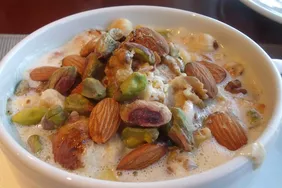

TA'AMYA (Falafel)
Ta'ameya (Egyptian falafel) is an all-time favorite street food in Egypt. In most parts of the Middle East, falafel is made with ground chickpeas. In Egypt however, we make it with dried fava beans. These are best served with pita bread, tomato, onions, and tahini sauce.

INGREDIENTS
- 2 cups dried split fava beans
- 1 red onion, quartered
- ½ cup fresh parsley
- ½ cup fresh cilantro
- ½ cup fresh dill
- 3 cloves garlic
- 1 ½ teaspoons ground coriander
- 1 ½ teaspoons salt
- 1 teaspoon ground cumin
- 1 cup sesame seeds (Optional)
- 1 quart vegetable oil for frying, or as needed
DIRECTIONS
- Place fava beans into large bowl and cover with several inches of water. Let soak, 8 hours to overnight. Drain.
- Combine soaked fava beans, red onion, parsley, cilantro, dill, garlic, coriander, salt, and cumin in a food processor; process to a dough-like consistency.
- Heat a skillet over medium heat. Add sesame seeds; cook, stirring occasionally, until toasted, about 5 minutes. Transfer to a large plate.
- Shape fava bean mixture into about 50 balls. Roll balls in sesame seeds to coat.
- Fill a large saucepan 1/4 full with oil; heat over medium heat. Fry fava bean balls in batches until golden brown, 3 to 5 minutes per batch. Drain on paper towels.
UMM ALI
INGREDIENTS
- 1 sheet frozen puff pastry, thawed
- ¼ cup raisins
- ¼ cup slivered almonds
- ¼ cup pine nuts
- ¼ cup chopped pistachio nuts
- ¼ cup sweetened, flaked coconut
- 5 cups milk
- 1 cup white sugar
- 1 teaspoon vanilla extract
DIRECTIONS
- Preheat the oven to 400 degrees F (200 degrees C).
- Unroll 1 puff pastry sheet onto a lightly floured surface and roll out to about 17x12-inches. Place on a baking tray.
- Bake in the preheated oven until puffed and golden brown, about 15 minutes.
- Break puff pastry into pieces and place in a large bowl. Add raisins, almonds, pine nuts, pistachios, and coconut; toss until well combined. Spread evenly in a 9x13-inch glass baking dish.
- Pour milk into a saucepan; stir in sugar and vanilla. Cook over medium-high heat, stirring occasionally, until hot but not quite boiling. Pour over puff pastry mixture in the baking dish.
- Return to the oven and bake for 15 minutes. Turn on the broiler and continue baking until the top is browned, about 2 minutes. Let stand for 5 minutes before serving warm.